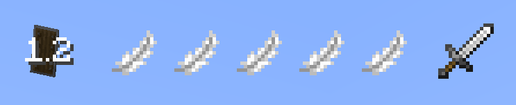

Combat Mode
Combat Mode is the heart of Kagurabachi Craft's gameplay. It is a toggleable stance that completely replaces vanilla Minecraft's combat with a faster, more technical system.
To enter Combat Mode, press the designated key (default: Y). Your HUD will change, and your abilities will be drastically different.
The Combat HUD
When in Combat Mode, a new UI element will appear on your screen, showing your available resources.

- Dodge Charges: The square-shaped icons indicate how many times you can dodge.
- Parry/Heavy Cooldown: The icons show the cooldown status of your Parry and Heavy Attack abilities.
Core Actions
Light Attacks
- Combo System: Light attacks (LMB) can be chained into a combo string. The sword has a 5-hit combo, while unarmed has a 4-hit combo. Each successive hit in the chain deals more damage. The combo resets if you miss or wait too long between attacks.
- Area of Effect (AoE): All light attacks deal damage in a small cone in front of the player, allowing you to hit multiple targets at once.
Heavy Attacks
- Heavy Attack (RMB): A powerful move with several variations depending on your actions and equipment.
- Standard Heavy Attack: Charge up and release a slower attack that can break an opponent's guard.
- Dash Attack (Sprint + RMB with Sword): When performed with a sword while sprinting, you will lunge forward in a devastating dash, cutting through everything in your path.
- Slam Attack (Jump + RMB): Holding the heavy attack key while jumping will launch you high into the air. Releasing it will cause you to slam down from the sky, creating a powerful area-of-effect impact.
- Unarmed Heavy Attack Variations: Unarmed heavy attacks offer unique utility:
- Directional Knockback: When releasing an unarmed heavy attack, you can influence the direction your opponent is knocked back. By looking to the left or right of your target, you can send them flying sideways.
- Ground Slam: If you look directly at the ground while releasing an unarmed heavy attack, you will slam the ground, creating a shockwave that launches all nearby enemies into the air.
Defensive Maneuvers
- Dodge (LALT by default): Quickly dash in a chosen direction to evade attacks. This consumes a Dodge Charge. Charges regenerate over time.
- Block (Hold Shift): Reduces incoming damage.
- Parry (Tap Shift right before an attack hits): Perfectly time a block to deflect an enemy's attack, leaving them stunned and vulnerable for a counter-attack.
Air Combo
When you attack an enemy while airborne, you receive a small vertical boost. This allows you to stay in the air longer and perform a series of attacks without touching the ground.
Player Stats and Skills
Character progression is based on leveling up several mastery trees by gaining experience from related actions.
You can open GUI using P by defaul.
-
Key Stats:
- Spiritual Energy Mastery (
seMastery): The central stat. Leveling it up increases your maximum Spiritual Energy (maxSE) and grants powerful passive boosts. - Sword Mastery (
SwordMastery): Increases the damage and effectiveness of sword attacks. - Hand-to-Hand Mastery (
HandToHandMastery): Increases the damage of unarmed attacks. - Sorcery Mastery (
SorceryMastery): Increases the power of your magical abilities.
- Spiritual Energy Mastery (
-
Passive Boosts from
seMastery:- As your
seMasterylevel increases, you gain permanent positive effects like increased max health (HEALTH_BOOST), movement speed (MOVEMENT_SPEED), and damage resistance (DAMAGE_RESISTANCE). This makesseMasterythe most important stat for overall power and survivability.
- As your
Sheathing & Riposte
You can toggle your katana between a drawn and sheathed state with a dedicated key (default: H).
While this may seem cosmetic, it has a crucial combat function. Parrying an attack while your katana is sheathed will perform an an instant, damaging counter-attack. This is a high-risk, high-reward maneuver that deals significant damage based on your Sword Mastery and the weapon's own power.
Backstabs
Attacking an unaware or outmaneuvered opponent from behind is a key tactic rewarded in Kagurabachi Craft. - All attacks that land on an enemy's back deal 25% bonus damage. - A successful backstab is confirmed by a distinct critical hit sound and a burst of particles on the target's back, letting you know your tactical positioning was successful.
PvP: Attack Clashes
When two or more players in Combat Mode strike each other with light attacks at nearly the same moment, their attacks will clash instead of dealing damage. This mechanic turns head-on engagements into a tense battle of timing.
When a clash occurs, both players are knocked back slightly, and a special effect plays out depending on the weapons used: - Sword vs. Sword: A sharp metallic sound plays, and sparks fly from the impact. - Fist vs. Fist: A concussive boom echoes as the blows meet, creating a sonic shockwave. - Sword vs. Fist: A powerful block effect occurs, signifying the clash between steel and raw power.
Style Clash: The Ultimate Showdown
When two or more players use a Style ability (the S-Rank ultimate) at nearly the same time, a normal attack clash is not enough to decide the victor. Instead, they will trigger a Style Clash, a dramatic, cinematic showdown to determine whose will is stronger.
The Standoff
Participants are frozen in a dramatic face-off as the world erupts around them. Control is taken away as the camera focuses on the duel.
The Quick-Time Event (QTE)
A special UI element will appear on the screen of all participants: a bar with a moving slider and a colored "success zone". - Your Goal: Click your mouse when the slider is inside the success zone. - The Challenge: The size and position of the success zone are random each time, testing your reflexes. The higher your mastery, the larger the success zone will be.
Winning the Clash
The clash consists of multiple rounds. The team that successfully completes the most QTEs wins the clash. - Winners: The winning player(s) will complete their Style animation, dealing massive damage to the losers. - Losers: The losing player(s) have their Style cancelled. They take heavy damage and receive powerful debuffs like Weakness and Slowness. - Draw: If both sides have an equal number of wins, the clash ends, and both parties are simply pushed back with no damage dealt.